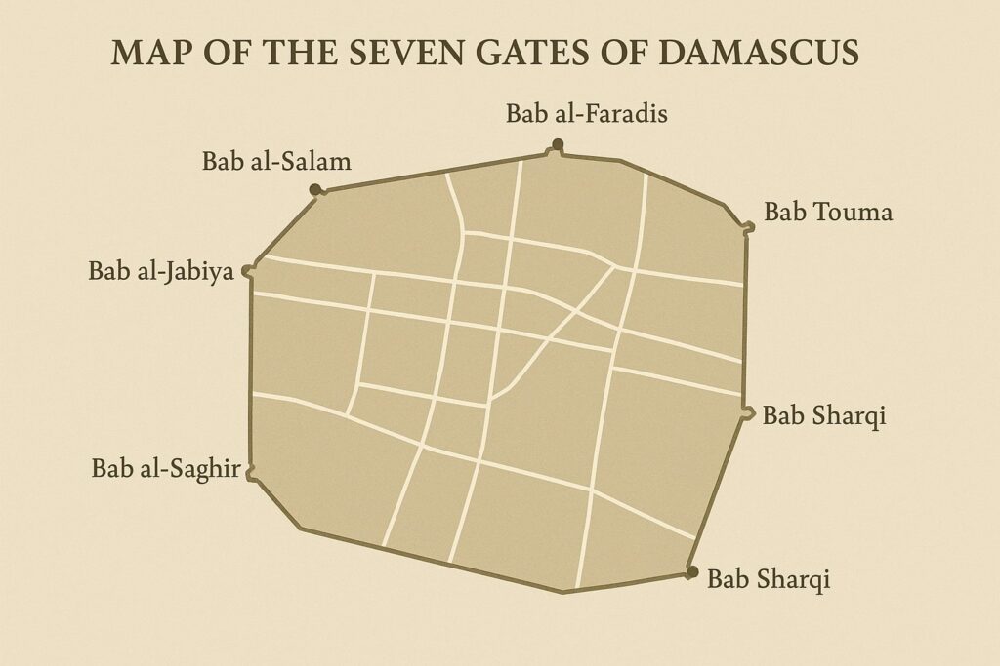

Antik Roma'dan İslam fethine uzanan, gezegenleri temsil eden tarihi surlar ve kapılar.

Dünyanın üzerinde kesintisiz yaşanılan en eski şehri olan Şam (Dımaşk), tarihi boyunca kendini korumak için devasa surlarla çevrelenmiştir. Bu surların ilk temelleri Aramiler döneminde atılmış, ancak bugünkü heybetli yapısını Antik Roma İmparatorluğu döneminde kazanmıştır.
Romalılar, şehri yeniden inşa ederken astronomiye ve mitolojiye olan inançlarını şehrin mimarisine yansıttılar. Şehre giriş çıkışı sağlayan 7 devasa kapı inşa ettiler ve bu kapıların her birini gökyüzündeki bir gezegene adadılar. İslam orduları Şam'ı fethettiğinde bu kapılar yıkılmamış, aksine onarılarak İslam medeniyetinin barış ve ticaret kapıları haline getirilmiştir.
Aşağıda Eski Şam'ı çevreleyen 7 tarihi kapının orijinal isimleri yer almaktadır:
Romalılar her kapının üzerine temsil ettiği gezegenin mitolojik tanrısının figürünü oymuştur. İşte bu eşleşmeler:
| Kapı Adı (Arapça) | Antik Roma Adı | Temsil Ettiği Gezegen | Günümüzdeki Durumu |
|---|---|---|---|
| Bab Şarki | Porta Orientalis | Güneş | Ayakta, araç trafiğine açık. |
| Bab Tuma | Porta Thomae | Venüs | Ayakta, turistik meydan. |
| Bab Kisan | Porta Saturni | Satürn | Kısmen ayakta, kilise olarak kullanılıyor. |
| Bab el-Cabiye | Porta Occidentalis | Mars | Sadece kalıntıları mevcut. |
| Bab el-Faradis | Porta Mercurii | Merkür | Çarşı içinde kalmış, ayakta. |
Diğer kapıların neyi temsil ettikleri kesin olarak bilinmemektedir.
M.S. 635 yılında İslam orduları Şam'ı kuşattığında, efsanevi komutan Halid bin Velid ordusuyla birlikte doğu kapısı olan Bab Şarki'den şehre savaşarak girmiştir. Aynı esnada diğer büyük komutan Ebu Ubeyde bin Cerrah, Bab el-Cabiye kapısından barış yoluyla şehre girmiştir. İki ordu, şehrin tam ortasında yer alan "Via Recta" (Doğru Sokak) üzerinde buluşmuş ve şehir İslam topraklarına katılmıştır.
Hristiyanlık tarihi için çok önemli bir olay Bab Kisan kapısında yaşanmıştır. Hristiyanlığı yaymaya çalışan Aziz Pavlus, kendisini öldürmek isteyen Romalı askerlerden kaçmak için gece vakti müritleri tarafından bir küfe (sepet) içine konularak bu kapının surlarından aşağıya, şehrin dışına sarkıtılmıştır. Bugün bu kapının olduğu yerde bu olayı anan bir kilise bulunmaktadır.